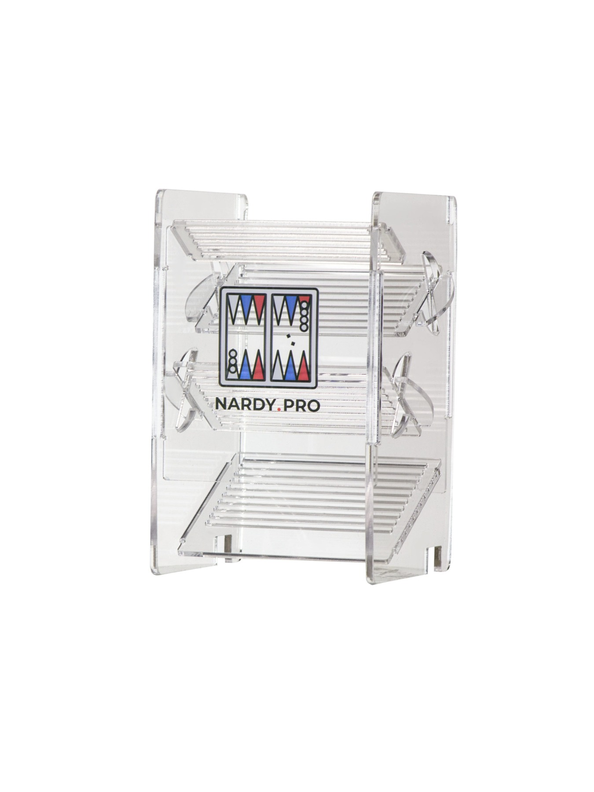
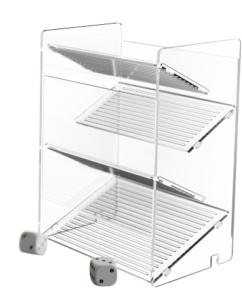
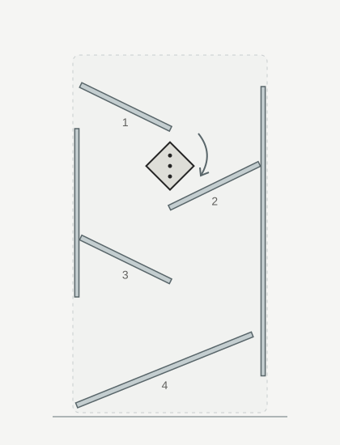
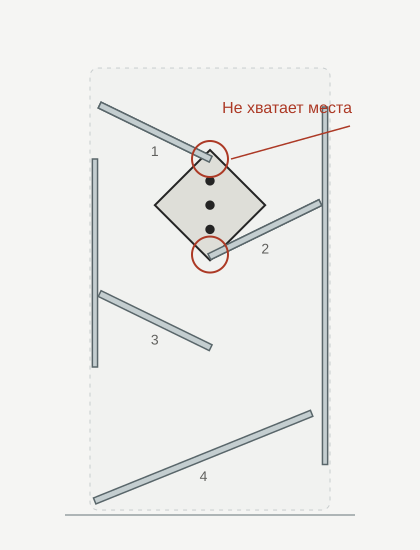
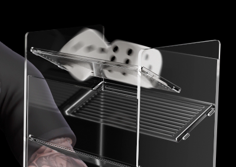
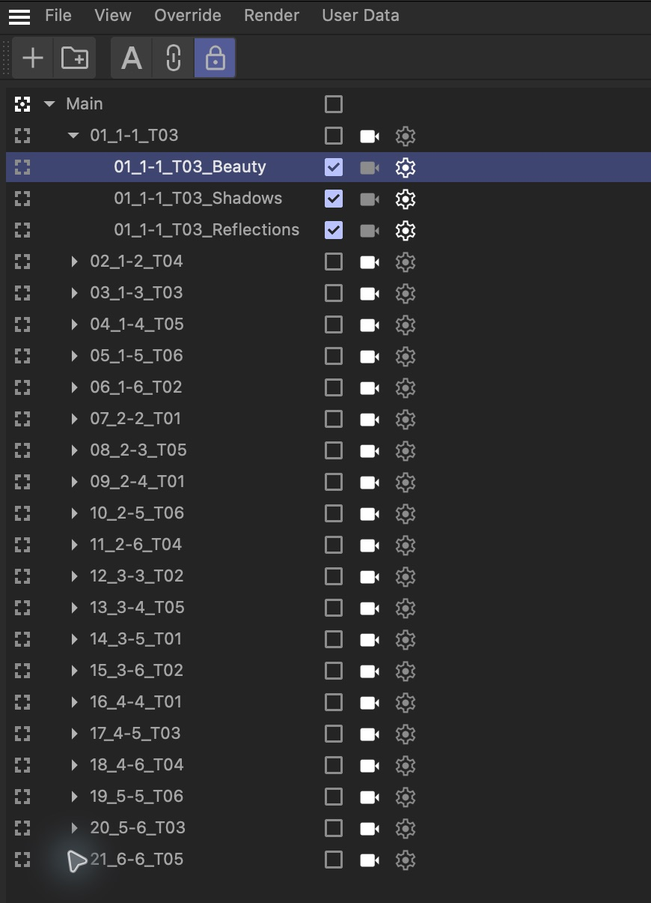
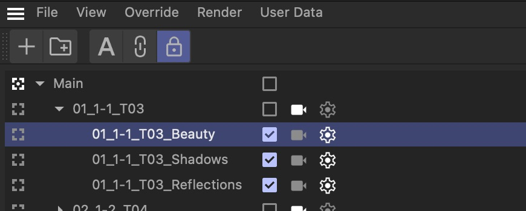
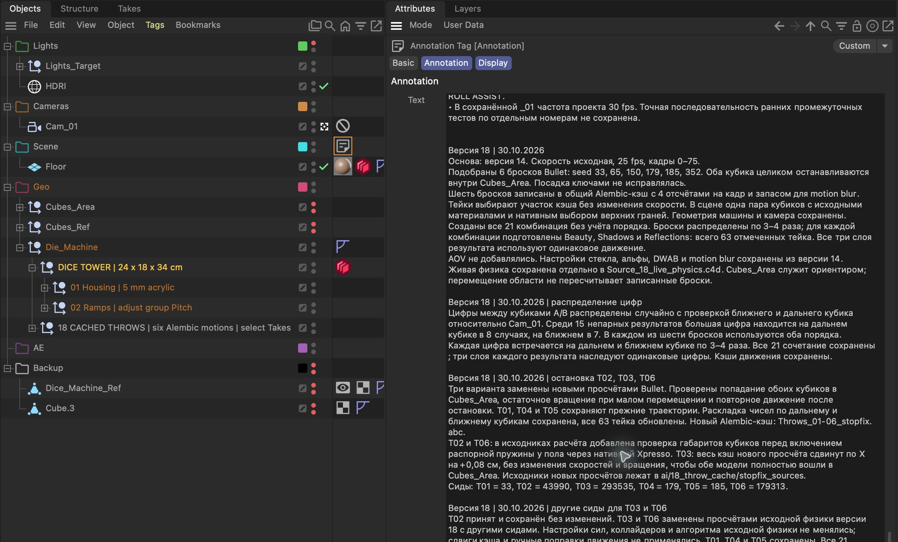

Что видит игрок
Крупный кубик с точками.
Число легко различить.
Cinema 4D × AI / октябрь 2026
AI подбрасывал кубики больше двух тысяч раз, чтобы моя кукуха не поплыла
01 / Референс и модель


Задача / Мобильная игра
Мы специально увеличили кубики, чтобы игрок сразу видел, какое число выпало.
Ограничение / Переход между этажами
Между краями первой и второй платформ кубику нужно пройти и повернуться.
Большой кубик при таком повороте задевает обе платформы.


Схема по геометрии машины.
Решение / Видимый кубик и невидимая оболочка
Крупный кубик с точками.
Число легко различить.
Меньшую невидимую оболочку.
Она называется коллайдером
и определяет столкновения.
Меньшая оболочка проходила внутри машины. Но видимый кубик мог пересекать стекло.
Проблема / Ранний рендер
Невидимые оболочки были меньше видимых кубиков.
Физика считала контакт корректным, но геометрия пересекала стекло.

04 / Что пробовали
Размер менялся на глазах.
Часть кубика исчезала.
Каждый бросок нужно править.
Платформа остаётся на месте.
Условные схемы сбоку. Серое: геометрия. Красный пунктир: коллайдер.
Условие / Место приземления
Зелёная рамка:
область Cubes_Area.
Оба кубика должны целиком остановиться внутри неё.
Меняем только сид.
Машина и настройки физики те же.
07 / Проверка движения
АгентСчитает физику и проверяет попадание в зону.
ЯСмотрю превью и принимаю движение.
Впечатление игрока / Разные броски
Если менять только числа, кубики каждый раз падали бы одинаково.
Поэтому мы подготовили шесть вариантов движения.
Результаты / Используем готовые движения
1 + 2 и 2 + 1 считаем одной парой.
Для каждой пары выбрали один из шести бросков.
Числа задали отдельно, движение пересчитывать не пришлось.
тестовых симуляций за проект
09 · Рендер и композ


Три слоя для композа. Лишние AOV убрали.
08 / Подготовка к рендеру

Тейк хранит настройки отдельного рендера.
Для каждой пары чисел:

Beauty · Shadows · Reflections
Все три слоя используют одно движение.
11 / Scene → Annotation
Annotation: заметки
внутри файла сцены.
Выбираем тег
у объекта Scene.

Итоги
Финал